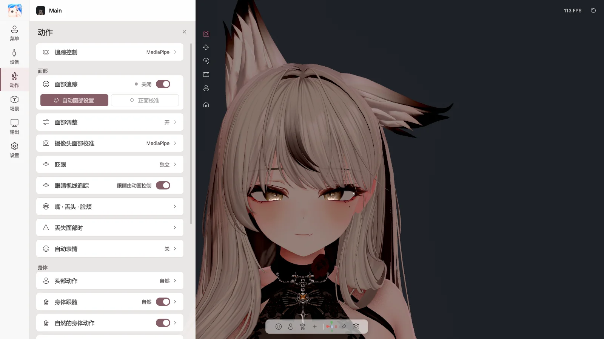

7. 动作#
在 动作 页面中设定面部、身体和手的运动方式。设置按角色分别保存。

动作页面
追踪控制#
| 开关 |
作用 |
| 镜像（像照镜子一样移动） |
像镜子一样左右对应 |
| 手臂 / 手 / 手指 |
用摄像头驱动各部位 |
| 手势 → 表情 |
将手形转换为角色的手势表情 |
| 项目 |
作用 |
| 面部追踪 |
开启 / 关闭面部表情追踪 |
| 自动面部设置 |
按引导做出表情，自动调整为适合自己的面部 |
| 正面校准 |
将当前面部朝向设为正面 |
Avatar Live 会找到并直接使用角色自带的面部追踪设置（VRCFaceTracking、ARKit·MMD 形态键、VRChat Eye Look·LipSync）。无需另行设置。
自动面部设置#
 自动面部设置
自动面部设置
按照画面引导，依次做出无表情、闭眼、张嘴、说话、微笑、嘟嘴、鼓腮、伸舌头、移动视线，并点击 测量。完成后请点击 应用。
- 用 上一步 / 跳过 / 取消 切换步骤。
- 第一步中注视的位置会成为角色的正面视线。请像直播时一样看着屏幕。
- 面部光线明亮时会更准确。
面部调整#
| 项目 |
作用 |
| 启用面部值调整 |
开启 / 关闭调整值的应用 |
| 左右一起编辑 |
更改一侧时另一侧也一起更改 |
| 平滑 |
减少抖动 |
| 数值列表（眼睛 · 眉毛 · 嘴 · 脸颊和鼻子） |
调整各表情的幅度 |
| 重置此值 / 重置所有值 |
恢复初始状态 |
摄像头面部校准#
调整摄像头一侧的基准。对所有角色通用。
| 滑块 |
调整内容 |
| 闭眼阈值 |
闭到什么程度视为闭眼 |
| 嘴巴全开阈值 |
张到什么程度视为嘴巴全开 |
| 上齿显示阈值 |
上齿开始露出的程度 |
| 微笑时隐藏上齿 |
微笑时让上齿少露出一些 |
| 左右 / 上下视线范围 |
眼球的移动范围 |
| 鼓腮最大阈值 |
鼓腮的最大幅度 |
| 项目 |
作用 |
| 模式 |
独立（每只眼睛分别处理，可眨单眼）/ 同步（双眼一起）/ 智能（平时一起，眨单眼时分开） |
| 眨眼强度 / 眨眼响应 |
闭合程度，响应速度 |
| 高级 |
左右强度，闭眼和睁眼速度 |
眼睛视线追踪#
让眼球跟随视线移动。
嘴 · 舌头 · 脸颊#
| 项目 |
作用 |
| 嘴巴 电平表 |
当前口型同步状态 |
| 自动电平 |
根据声音大小自动调整嘴巴幅度（关闭时用 灵敏度 手动调整） |
| 麦克风 → 面部追踪 |
是否将声音也用于面部追踪的嘴部 |
| 语音校准 |
点击元音按钮并发音，匹配自己的声音 → 保存语音配置 |
舌头 · 鼓腮#
| 项目 |
作用 |
| 名称开关 |
立即开启 |
| 用摄像头检测 |
用摄像头识别舌头和脸颊（在自动面部设置后使用） |
| 按键 |
用快捷键开启（按住时 / 按下切换） |
舌头和鼓腮的 用摄像头检测 预计能够正常运行，但尚未在所有面部和摄像头上测试，属于 实验性功能。
丢失面部时#
| 项目 |
作用 |
| 保持最后表情 |
短暂丢失时保持表情的时间 |
| 恢复自然表情用时 / 重新识别时过渡用时 |
表情切换的平滑程度 |
| 自动眨眼 / 自动转动视线 / 看向镜头 |
看不到面部期间的眼睛动作 |
| 项目 |
作用 |
| 头部追踪 |
开启 / 关闭头部动作 |
| 强度 |
轻微 / 自然 / 夸张 |
| 身体跟随 |
胸部和脊柱自然地跟随头部 |
| 自然的身体动作 |
静止时也会轻微移动 |
| 呼吸 |
呼吸动作 |
| 头部待机动作 |
不追踪时头部轻微移动 |
手 · 桌面#
桌面互动#
当摄像头看不到手时，角色的手会配合真实的键盘和鼠标输入打字和移动鼠标。
🔒 键盘输入仅用于驱动角色的手。不会保存、记录或发送输入的文字。
| 项目 |
作用 |
| 桌面互动 |
开启 / 关闭 |
| 手部默认姿势 |
桌面高度和距离、双手间距、手肘、手腕、手指弯曲 |
| 预览手部默认姿势 |
确认姿势 |
| 键盘输入反应 |
打字时手指、手和手腕的动作幅度 |
| 鼠标输入反应 |
握鼠标的手（右手 / 左手 / 自动），移动和点击的幅度 |
| 自定义握鼠标姿势 |
将当前姿势保存为握鼠标姿势 |
追踪丢失时#
选择看不到手时的姿势：键盘 / 桌面 · 保持最后姿势 · 自然垂于身侧 · 角色动画 · 我的姿势
- 放下手时使用手部默认姿势 — 放下手后，即使摄像头能看到也使用默认姿势
高级设置#
| 项目 |
作用 |
| 头部 · 身体细节调整 |
头部旋转和位置强度，身体跟随细节 |
| 打字风格 |
细微 / 自然 / 夸张 |
| 面部兼容性 |
确认角色自带的面部追踪设置 |
| 面部输出 |
自动（推荐） / 优先VRCFT / 优先Perfect Sync |
| 形态键上限 |
限制每个形态键的最大幅度 |
最后更新: 2026-10-09